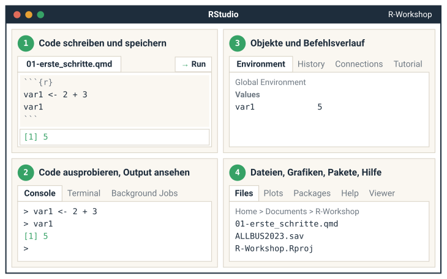
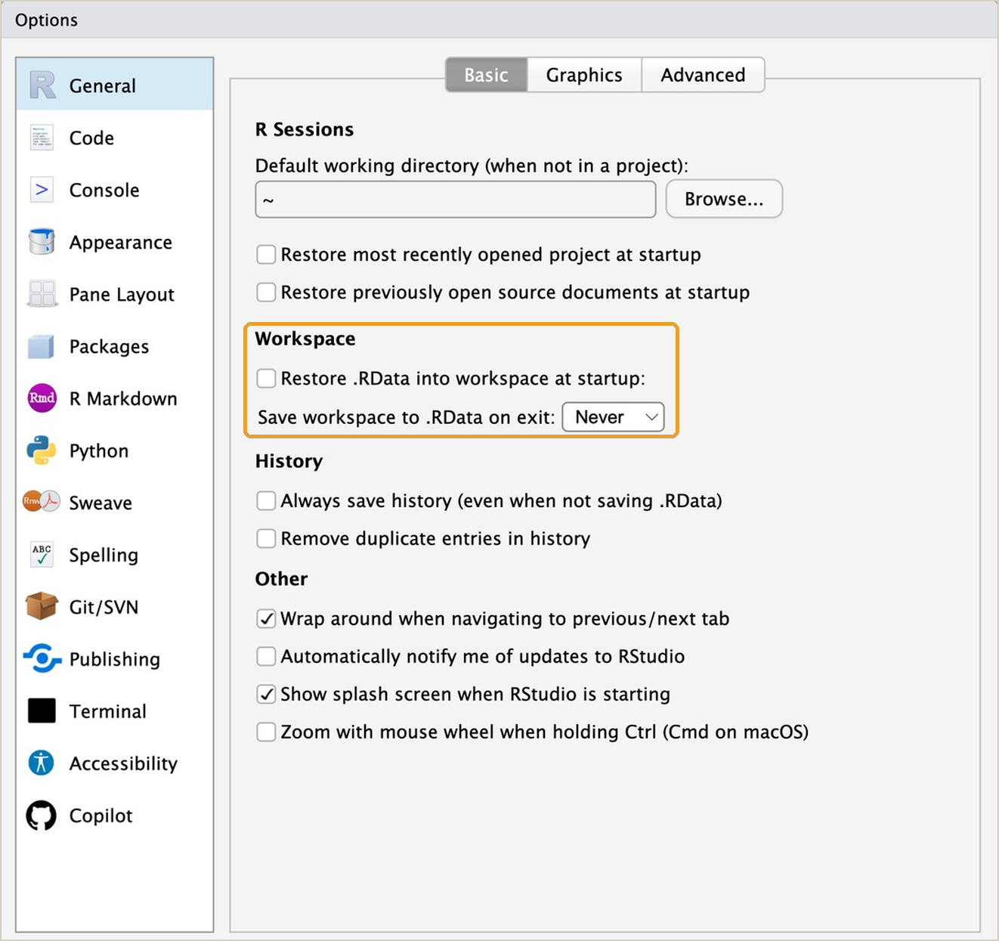
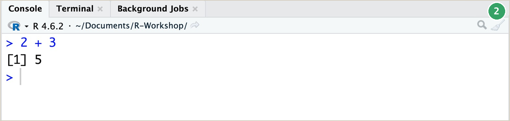
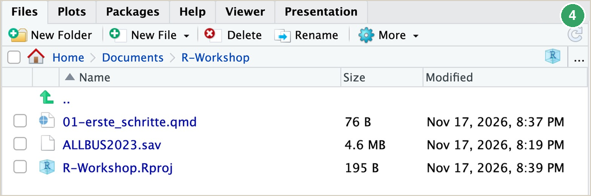
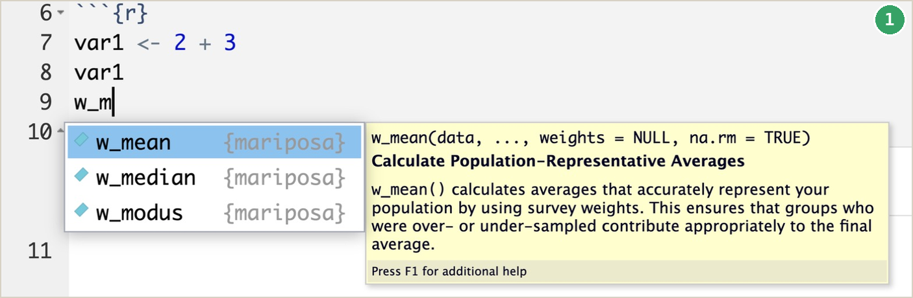
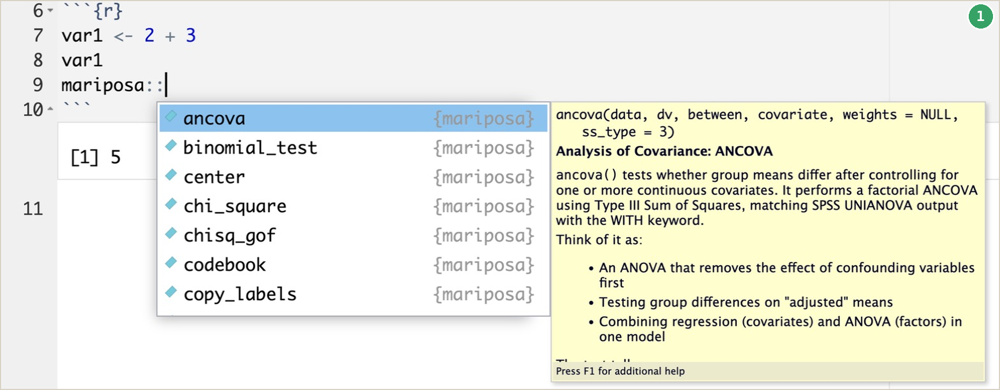
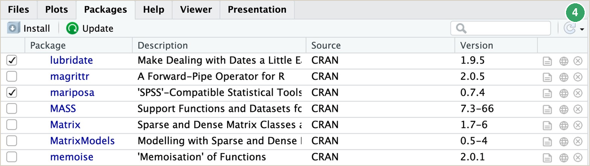

![ var1 <- 2 + 3, > var1 und in Grün [1] 5. 3 oben rechts, Objekte und Befehlsverlauf: die Reiter Environment, History, Connections und Tutorial, unter Global Environment und Values steht var1 mit dem Wert 5. 4 unten rechts, Dateien, Grafiken, Pakete, Hilfe: die Reiter Files, Plots, Packages, Help und Viewer, darin der Ordner Home > Documents > R-Workshop mit den Dateien 01-erste_schritte.qmd, ALLBUS2023.sav und R-Workshop.Rproj.">](Bilder/figuren/k01-oberflaeche.svg){kind=link}

1 RStudio
1.1 Worum es geht
R selbst ist nur ein Interpreter — eine Programmiersprache, die Befehle entgegennimmt und Antworten zurückgibt. Damit du komfortabel mit R arbeiten kannst, brauchst du eine integrierte Entwicklungsumgebung (IDE): einen Editor, eine Konsole, einen Datei-Browser und einen Variablen-Inspektor — alles in einem Fenster. RStudio ist diese Umgebung. Während du in SPSS alles über Klick-Dialoge erreichst, schreibst du in RStudio dein Vorgehen als Code in ein Quarto-Dokument — reproduzierbar, kommentierbar, versionierbar.
Falls du R und RStudio noch nicht installiert hast, machst du das in den ersten zwei Abschnitten. Danach öffnest du RStudio und arbeitest die folgenden Abschnitte parallel mit. Am Ende kannst du dich darin orientieren, Pakete nachinstallieren und ein erstes Projekt anlegen.
Hinweis
Forschungsjournal: Wo stehst du in deiner Mini-Studie? Du startest gerade. In den nächsten drei Kapiteln (1–3) richtest du das Werkzeug ein. Ab Kapitel 4 lädst du den ALLBUS 2023, ab Kapitel 5 baust du eine Skala zur Islamfeindlichkeit aus sechs Survey-Items, ab Kapitel 7 prüfst du Hypothesen — und ab Kapitel 9 modellierst du, welche sozialen und politischen Merkmale Islamfeindlichkeit am besten erklären. Das hier ist die erste Etappe: die Werkstatt einrichten.
Was du nach diesem Kapitel kannst
- R und RStudio in der richtigen Reihenfolge installieren.
- Die Benutzeroberfläche von RStudio sicher bedienen.
- Ein Projekt anlegen und in ihm sauber arbeiten.
- Den Unterschied zwischen Konsole und Quarto-Dokument erklären.
- Den Begriff Working Directory einordnen und mit
getwd()prüfen. - Pakete installieren, aktivieren und aktuell halten — insbesondere tidyverse und mariposa.
- Hilfe-Seiten und Paket-Vignetten gezielt aufrufen.
- Die wichtigsten Tastenkürzel anwenden.
1.2 R installieren
R selbst ist das Rechenwerk im Hintergrund — die Sprache, die deine Befehle ausführt. RStudio ist nur die Oberfläche. Du musst beide installieren, R zuerst, dann RStudio. Wer es umdreht, bekommt beim ersten Start eine Fehlermeldung „No R installation found”.
Gehe zu cran.r-project.org und wähle dein Betriebssystem:
- macOS → lade die
.pkg-Datei für deine Architektur (Apple Silicon = M1/M2/M3/M4, oder Intel) und installiere sie per Doppelklick. - Windows → klicke auf base, dann auf den Download-Link, führe die
.exe-Datei aus. - Linux → folge den distro-spezifischen Anweisungen auf der CRAN-Seite.
Empfohlen ist R 4.5 oder höher. Wenn du schon eine ältere Version hast, ist das kein Problem — du installierst die neue parallel.
HinweisHintergrund: R auf dem Mac
Auf Macs mit Apple Silicon (M1–M4) lädst du die arm64-Version, auf älteren Intel-Macs die x86_64-Version. Wenn du nicht weißt, was du hast: Apfel-Menü → Über diesen Mac → Chip. Für Paket-Compilations brauchst du außerdem die Xcode Command Line Tools — sie werden bei Bedarf automatisch installiert, oder vorab per Terminal mit xcode-select --install.
1.3 RStudio installieren
Erst nachdem R installiert ist, holst du dir RStudio von posit.co/download/rstudio-desktop. Die Seite erkennt dein Betriebssystem automatisch und schlägt die richtige Version vor. Installiere wie jedes andere Programm.
Wenn du lokal nichts installieren möchtest, kannst du alternativ Posit Cloud im Browser nutzen — kostenloser Account, RStudio läuft komplett online.
HinweisHintergrund: RStudio und Posit
Die IDE heißt weiterhin RStudio, die Firma dahinter wurde 2022 in Posit umbenannt. Wenn du im Web Verweise auf „RStudio Cloud” findest, sind sie heute unter posit.cloud zu finden.
1.4 Benutzeroberfläche
Die Benutzeroberfläche von RStudio (Graphical User Interface, kurz GUI) ist in vier Bereiche geteilt (Abbildung 1.1). Solange kein Dokument geöffnet ist, nimmt die Konsole die ganze linke Hälfte ein. Der Editor oben links erscheint, sobald du ein Dokument öffnest (Kapitel 1.5.2).
01-erste_schritte.qmd legt var1 an. Das Ergebnis steht unter dem Chunk und in der Konsole, das neue Objekt im Environment.
| Bereich | Inhalt | Wofür du es brauchst |
|---|---|---|
| 1 oben links | Editor für Quarto-Dokumente (.qmd) |
Code schreiben, speichern, ausführen |
| 2 unten links | Konsole | Code direkt ausprobieren, Output ansehen |
| 3 oben rechts | Environment, History, Connections, Tutorial | Objekte sehen, Befehlsverlauf, Datenbanken |
| 4 unten rechts | Files, Plots, Packages, Help, Viewer | Datei-Browser, Grafiken, Hilfe, Pakete |
Die folgenden Abschnitte gehen die Bereiche der Reihe nach durch. Die grüne Zahl oben rechts in den Bildschirmfotos zeigt, aus welchem Bereich ein Bild stammt.
1.4.1 Optionen für reproduzierbares Arbeiten
Bevor du intensiv mit RStudio arbeitest, deaktiviere unter Tools → Global Options zwei Komfort-Features, die im Forschungsalltag mehr schaden als nützen:
- Restore .RData into workspace at startup — deaktivieren.
- Save workspace to .RData on exit — auf Never stellen.
Damit musst du bei jedem Neustart Daten und Variablen neu laden — der Vorteil ist ein wirklich frischer Workspace ohne unsichtbare Altlasten aus früheren Sitzungen. Das ist die Grundlage für reproduzierbares Arbeiten: deine Analyse darf nur von dem abhängen, was im Dokument steht.
Wer es lieber dunkel mag: Unter Appearance findest du Farbschemata für Editor und Konsole.
1.4.2 Konsole
Die Konsole ist dein erstes Übungsfeld: Hier kannst du Eingaben direkt ausprobieren. Das >-Zeichen ist die Eingabeaufforderung (prompt), und du kannst R wie einen Taschenrechner nutzen:
2 + 3[1] 5
Was du in der Konsole tippst, ist allerdings nirgends dauerhaft gespeichert. Sobald du eine Analyse behalten willst, gehört sie in ein Quarto-Dokument (siehe Kapitel 1.5.2).
1.4.3 Environment und History
Im Reiter Environment findest du das Global Environment (Dropdown). Hier werden alle Objekte (Variablen, Datensätze, Funktionen), die du angelegt hast, gespeichert.

Unter History siehst du alle Befehle, die du bisher ausgeführt hast. Per Doppelklick werden sie zurück in die Konsole kopiert und können dort modifiziert oder erneut ausgeführt werden. In der Konsole rufst du die History auch direkt über die Tastenkombination cmd (macOS) bzw. strg (Windows) + ↑ ab.
1.4.4 Files und Arbeitsverzeichnis mit getwd() und setwd()
Unter Files siehst du den Datei-Browser deines Arbeitsverzeichnisses (working directory). Das ist der Ordner, in dem R standardmäßig sucht, wenn du eine Datei einliest oder speicherst — schreibst du read_spss("ALLBUS2023.sav"), dann sucht R die Datei genau dort. Welcher Ordner das gerade ist, sagt dir getwd() in der Konsole:
getwd()
# [1] "/Users/anna/Documents/R-Workshop"Manuell setzen kannst du das Arbeitsverzeichnis mit setwd("…") — in der Praxis brauchst du das fast nie, wenn du mit einem Project arbeitest (siehe Kapitel 1.5.1). Bei jedem Project-Start ist das Arbeitsverzeichnis automatisch der Projektordner. Das ist die Grundlage für portable Dokumente: nirgendwo absolute Pfade, jede Datei wird relativ zum Projekt angesprochen.

Warnung
Vorsicht: Absolute Pfade. Schreibe niemals read_spss("/Users/anna/Documents/...") in dein Dokument. Sobald du es teilst oder auf einen anderen Rechner ziehst, ist der Pfad kaputt. Mit Projects reicht der relative Pfad — der Dateiname genügt, wenn die Datei im Projektordner liegt.
Der Dateiname allein reicht, weil R ihn im Arbeitsverzeichnis sucht, und das ist bei einem Project auf jedem Rechner der Projektordner. Der absolute Pfad zeigt dagegen auf einen Ordner, den es nur auf Annas Rechner gibt (Abbildung 1.2).
![Oben zwei nummerierte Code-Zeilen: 1 read_spss(„ALLBUS2023.sav“), 2 read_spss(„/Users/anna/Documents/R-Workshop/ALLBUS2023.sav“). Darunter zwei Kästen. Links RECHNER VON ANNA: getwd() gibt [1] „/Users/anna/Documents/R-Workshop“ aus, darunter ein Ordner R-Workshop mit den Dateien R-Workshop.Rproj, 01-erste_schritte.qmd und ALLBUS2023.sav, daneben 1 gefunden und 2 gefunden in Grün. Rechts RECHNER VON BORIS: getwd() gibt [1] „C:/Users/boris/Documents/R-Workshop“ aus, darunter derselbe Ordner mit denselben Dateien, daneben 1 gefunden in Grün und 2 nicht gefunden in Orange.](Bilder/figuren/k01-arbeitsverzeichnis.svg)
R-Workshop auf zwei Rechnern. Mit dem Dateinamen findet read_spss() die Datei auf beiden, mit dem absoluten Pfad nur auf dem Rechner von Anna.
1.5 Mit RStudio arbeiten
Jetzt geht es an die praktische Arbeit. Drei Konzepte sind zentral: das Projekt als Container, das Quarto-Dokument als Arbeitsmedium und die Tastenkürzel als Beschleuniger.
1.5.1 Projekt anlegen
Bevor du mit Daten arbeitest, lohnt es sich, ein Project anzulegen. Über File → New Project → New Directory → New Project öffnest du die entsprechende Maske, vergibst einen Namen und einen Speicherort.

Was du davon hast:
- Alle geöffneten Files werden beim Start des Projekts (per Doppelklick auf die
.Rproj-Datei) wieder geladen. - Du kannst beliebig viele Projekte parallel öffnen und zwischen ihnen wechseln.
- Das Arbeitsverzeichnis ist automatisch der Projektordner — du musst dich nicht mehr darum kümmern, vollständige Pfade einzutippen.
Schiebe deine Datensätze (etwa ALLBUS2023.sav, sobald du ihn hast) in den Projektordner, und du kannst sie direkt mit read_spss("ALLBUS2023.sav") einlesen.
1.5.2 Quarto-Dokument: dein zentrales Arbeitsobjekt
Ein Quarto-Dokument ist eine Textdatei mit der Endung .qmd. Darin steht Text, und dazwischen stehen Code-Chunks mit R-Code. Führst du einen Chunk aus, erscheint das Ergebnis direkt darunter. Wie ein Quarto-Dokument aufgebaut ist und wie daraus ein fertiger Bericht wird, lernst du in Kapitel 2.
Ein neues Dokument legst du über File → New File → Quarto Document… an. Im Dialog gibst du einen Titel ein, lässt HTML als Format stehen und entfernst den Haken bei Use visual markdown editor. Dann siehst du den Quelltext so wie in diesem Buch. Lösche den Beispieltext unter dem Kopf (alles nach der zweiten ----Zeile) und speichere das Dokument mit cmd/strg + S im Projektordner, etwa als 01-erste_schritte.qmd.
Tipp
SPSS → R: Syntax-Datei und Quarto-Dokument. Das Quarto-Dokument übernimmt die Rolle der SPSS-Syntax-Datei. Du arbeitest weiterhin in der Syntax, nur in einer anderen Sprache, und Text und Ergebnisse stehen gleich daneben. Die meisten SPSS-Workflows lassen sich Schritt für Schritt übertragen, oft sogar in weniger Zeilen.
Ein erstes Beispiel: Füge mit cmd/strg + option/alt + I einen Chunk ein und schreibe zwei Zeilen hinein. Im Dokument sieht das so aus:
```{r}
var1 <- 2 + 3
var1
```Setze den Cursor in die erste Zeile und führe sie mit Run (oder cmd/strg + Enter) aus, dann die zweite. Das Ergebnis erscheint unter dem Chunk und in der Konsole:
var1 <- 2 + 3
var1[1] 5In RStudio steht das Ergebnis in einem Kasten direkt unter dem Chunk:
![Das Quarto-Dokument 01-erste_schritte.qmd im Editor von RStudio. Oben der Kopf mit title: Erste Schritte und format: html, darunter ein grau hinterlegter Chunk mit den Zeilen var1 <- 2 + 3 und var1. Direkt unter dem Chunk steht in einem Kasten das Ergebnis [1] 5. Oben rechts die grüne Zahl 1.](Bilder/rstudio/editor.png)
var1 ist jetzt im Environment sichtbar — mit dem Wert 5. Was eine Variable genau ist, wie Funktionen aufgerufen werden und welche Datentypen R kennt, lernst du in Kap. 3.
Warnung
Vorsicht: Zuweisungsoperator. Für Zuweisungen verwendest du <-, nicht =. Das = funktioniert zwar in vielen Fällen auch — es führt aber in komplexeren Kontexten (Funktionsargumenten) zu subtilen Bugs. Mach dir die Konvention <- zur Gewohnheit.
Konsole oder Dokument? Alles, was du behalten willst, schreibst du in das Quarto-Dokument. Die Konsole nutzt du zum Ausprobieren, etwa für eine schnelle Rechnung oder um zu sehen, was eine Fehlermeldung bedeutet. Auch install.packages() tippst du in die Konsole, weil du ein Paket nur einmal pro Rechner installierst. library() gehört dagegen in den ersten Chunk des Dokuments, denn jede neue R-Sitzung braucht es wieder (Kapitel 1.6.2).
In anderen Büchern und Tutorials begegnest du oft R-Skripten. Ein R-Skript ist eine Textdatei mit der Endung .R, die nur Code enthält, ohne Text und ohne Ergebnisse dazwischen. Du führst die Zeilen genauso mit cmd/strg + Enter aus; das Ergebnis steht dann nur in der Konsole.
1.5.3 Tab Completion und Paket-Präfix ::
RStudio hat eine sehr hilfreiche Funktion: Tab Completion. Während du tippst, erscheint ein Dropdown mit Vervollständigungs-Vorschlägen. Ab dem dritten Zeichen erscheint es von selbst, sonst rufst du es über die Tab-Taste auf. Tippst du zum Beispiel w_m, schlägt RStudio dir die mariposa-Funktionen w_mean(), w_median() und w_modus() vor; daneben steht die Hilfe zur markierten Funktion.

Stehst du innerhalb der Klammern einer Funktion und drückst Tab, listet RStudio alle Argumente auf. Funktionsargumente sagen einer Funktion, welche Daten verarbeitet werden und wie. In mariposa-Funktionen heißt das erste Argument typischerweise data, gefolgt von den interessierenden Variablen und optional weights = wghtpew für eine Gewichtung.

Wenn sich zwei Pakete eine Funktionsbezeichnung teilen, kannst du die Mehrdeutigkeit über den Paket-Präfix auflösen — paketname::funktion. Nach mariposa:: zeigt RStudio dir außerdem alle Funktionen des Pakets:

1.5.4 Nützliche Tastenbefehle
Diese Tastenkombinationen sparen dir auf Dauer viel Zeit:
| Befehl | Wirkung | Wann nützlich |
|---|---|---|
cmd/strg + Enter
|
Aktuelle Zeile ausführen | Im Chunk |
cmd/strg + S
|
Dokument speichern | Nach jeder Änderung |
cmd/strg + option/alt + I
|
Neuen Chunk einfügen | Im Quarto-Dokument |
cmd/strg + shift + Enter
|
Ganzen Chunk ausführen | Nach Änderungen im Chunk |
cmd/strg + ↑
|
Vorherige Befehle anzeigen | In der Konsole |
control/strg + L
|
Konsole leeren | Wenn es unübersichtlich wird |
cmd/strg + shift + C
|
Zeile als Kommentar setzen | Code kurz deaktivieren |
cmd/strg + shift + A
|
Code-Block re-strukturieren | Eingerückten Code aufräumen |
option/alt + -
|
Zuweisungspfeil <- erzeugen |
Statt manuell tippen |
cmd/strg + shift + M
|
Pipe |> erzeugen |
Beim Pipe-Schreiben (siehe Kap. 3) |
Eine vollständige Liste aller verfügbaren Tastenkürzel bekommst du in RStudio über option/alt + shift + K.
HinweisHintergrund:
|> oder %>%?
RStudio bietet seit Version 2021.09 den nativen Pipe |> (verfügbar ab R 4.1). Davor war der magrittr-Pipe %>% Standard. Wir verwenden in diesem Buch durchgängig |>. Unter Tools → Global Options → Code kannst du einstellen, welcher Operator beim Shortcut eingefügt wird — wir empfehlen die native pipe.
1.6 Pakete
R bringt von Haus aus — als base R — schon eine ganze Reihe nützlicher Funktionen mit. Für viele Analyseschritte sind sie aber zu abstrakt: Wir greifen deshalb auf zusätzliche Pakete zurück, die unsere Funktionsbibliothek erweitern. In diesem Buch arbeiten wir bewusst nur mit dem Ökosystem tidyverse für Datenmanipulation und Visualisierung und dem Paket mariposa für die statistische Analyse.
Funktionen wie read_spss() und w_mean() liegen in einem Paket, hier in mariposa. Das tidyverse fasst mehrere Pakete zusammen, etwa dplyr und ggplot2, die nach denselben Regeln arbeiten und die du mit einem Befehl gemeinsam installierst (Abbildung 1.3).

Mit einem Paket arbeitest du in zwei Schritten:
- Installieren mit
install.packages("name")— einmalig pro Rechner. Stell dir vor, du holst dir ein Werkzeug aus dem Baumarkt und legst es in dein Werkzeugregal. - Aktivieren mit
library(name)— einmal pro R-Sitzung. Du nimmst das Werkzeug aus dem Regal und legst es auf die Werkbank.
Ein Paket nur zu installieren, ohne library() aufzurufen, ist wie ein Werkzeug, das ungenutzt im Regal steht. Umgekehrt: Wenn du library(forcats) aufrufst, ohne das Paket installiert zu haben, kommt ein Fehler.
1.6.1 Installation mit install.packages()
Das tidyverse ist auf CRAN, dem zentralen R-Paket-Archiv, verfügbar und lässt sich direkt installieren:
install.packages("tidyverse")Damit hast du in einem Schritt die Pakete dplyr, tidyr, ggplot2, readr, purrr, tibble, stringr, forcats und lubridate installiert.
mariposa liegt ebenfalls auf CRAN und wird genauso installiert:
install.packages("mariposa")Für die Grafik-Kombinationen in Kap. 9 brauchst du außerdem noch patchwork:
install.packages("patchwork")
HinweisHintergrund: CRAN und GitHub
Pakete leben in R an zwei verschiedenen Orten:
- CRAN (Comprehensive R Archive Network) ist das offizielle Paket-Archiv — vergleichbar mit einem App Store. Jedes Paket wird vor der Aufnahme automatisch geprüft (baut auf allen Plattformen? Dokumentation vollständig? Tests laufen?). Updates sind stabil, aber zeitversetzt.
- GitHub ist die Entwickler:innen-Plattform. Hier liegt der aktuelle Entwicklungsstand — neueste Funktionen, frischeste Bugfixes, aber auch weniger Prüfung. Viele Pakete erscheinen dort früher als auf CRAN.
In diesem Buch installierst du beide Pakete von CRAN — das ist die stabile Variante. Die Entwicklungsversion von mariposa holst du bei Bedarf mit dem Hilfspaket remotes von GitHub (remotes::install_github("YannickDiehl/mariposa")); für das Buch brauchst du sie nicht.
1.6.2 Aktivierung mit library()
Installierte Pakete musst du in jeder R-Sitzung mit library() aktivieren:
Nach diesen drei Zeilen liegen alle drei Pakete auf der Werkbank (Abbildung 1.4). Schließt du RStudio, bleiben sie im Regal installiert; in der nächsten Sitzung rufst du library() erneut auf.

install.packages() stellt ein Paket einmal pro Rechner ins Regal, library() legt es in jeder R-Sitzung auf die Werkbank.
Alternativ kannst du Pakete auch über den Reiter Packages (rechts unten in RStudio) installieren und aktivieren — das ist gut für einen schnellen Überblick, aber für reproduzierbares Arbeiten ist der Code-Weg besser. Ein Haken vor dem Namen zeigt, dass das Paket mit library() aktiviert ist.

1.6.3 Pakete aktuell halten mit update.packages() und packageVersion()
Updates lassen sich über den Reiter Packages oder per Code anstoßen:
update.packages(ask = FALSE) # alle CRAN-Pakete aktualisieren — mariposa inklusive
packageVersion("mariposa") # welche Version ist installiert?
Warnung
Vorsicht: Updates mitten im Projekt. Wenn du in der Mitte eines Projekts ein Paket aktualisierst, ändert sich potenziell das Verhalten deiner Funktionen. Pflege Pakete zwischen Projekten oder dokumentiere die genutzten Versionen mit sessionInfo(). Dieses Buch ist mit mariposa 0.7.4 gerendert; bei älteren Versionen weichen manche Ausgaben ab.
1.6.4 Pakete zitieren mit citation() und toBibtex()
Wer in einer Hausarbeit mit mariposa rechnet, zitiert das Paket. citation("mariposa") gibt dir die fertige Literaturangabe inklusive DOI — mit toBibtex(citation("mariposa")) direkt im BibTeX-Format für dein Literaturverzeichnis (siehe Kapitel 2.9).
1.7 Hilfe finden mit ?, vignette() und browseVignettes()
Auch wer täglich mit R arbeitet, kann sich nicht alle Funktionen merken. R bietet dir deshalb über den Reiter Help eine vollständige Funktionsreferenz. Manche Einträge wirken am Anfang sperrig, sind nach einiger Übung aber die zuverlässigste Quelle.

Wenn du eine Funktion im Kopf hast, geht es am schnellsten über die Konsole — ein Fragezeichen vor den Funktionsnamen reicht. Hier zum Beispiel für die Mittelwert-Funktion aus base R:
?meanDie Hilfe öffnet sich unten rechts im Help-Reiter und zeigt: Funktionsbeschreibung, Argumente, Default-Werte, am Ende immer Anwendungs-Beispiele. Letztere kannst du direkt in deine Konsole kopieren.
Die Default-Werte stehen unter Usage: Bei mean() sind trim = 0 und na.rm = FALSE voreingestellt (Abbildung 1.5). Was ein Argument bewirkt, erklärt sein Eintrag unter Arguments.
![Schema einer Hilfeseite. Oben die Kopfzeile mit mean, dem Paket base und R Documentation, darunter der Titel Arithmetic Mean. Description mit dem Satz Generic function for the (trimmed) arithmetic mean., rechts beschriftet Funktionsbeschreibung. Usage mit den Zeilen mean(x, ...), ## Default S3 method: und mean(x, trim = 0, na.rm = FALSE, ...), in der trim = 0 und na.rm = FALSE hellorange hinterlegt sind, rechts beschriftet Default-Werte. Arguments mit x, trim, na.rm (hellorange hinterlegt) und ..., jeweils mit einem grauen Balken, rechts beschriftet Argumente. In Grau Value, References, See Also. Examples mit den Zeilen x <- c(0:10, 50), xm <- mean(x) und c(xm, mean(x, trim = 0.10)), rechts beschriftet Beispiele.](Bilder/figuren/k01-hilfeseite.svg)
?mean. Die grauen Balken stehen für Fließtext, der hier ausgelassen ist.
Um alle Funktionen eines Pakets aufzulisten, öffnest du den Reiter Packages, suchst das Paket und klickst es an. Du landest in der Paketreferenz.
Viele Entwickler:innen pflegen zusätzlich eigene Webseiten für ihre Pakete — das sind oft die besten Einstiegspunkte:
- tidyverse.org/packages — Übersicht aller tidyverse-Pakete mit Vignetten und Funktionsreferenz.
- yannickdiehl.github.io/mariposa — Funktionsreferenz, Vignetten zu Labels, Gewichtung, deskriptiver Statistik, Korrelation, Regression, Skalenanalyse und SPSS-Kompatibilität.
Eine Vignette ist ein längerer Anwendungs-Artikel zu einem Paket — typischerweise mit durchgerechnetem Beispiel, in das Paket eingebettet. Auf den Paket-Webseiten findest du sie unter Articles; direkt in RStudio rufst du sie mit vignette("name") auf oder listest alle Vignetten eines Pakets mit browseVignettes("paketname").
Wenn du im Web nach Hilfe suchst, ist Stack Overflow die zentrale Anlaufstelle. Ergänze deine Suchanfrage mit dem Schlagwort Stack Overflow — fast jedes typische R-Problem wurde dort schon einmal beantwortet.
Erste fünf Schritte nach der Installation
Wenn du dieses Kapitel mit einem frischen Rechner gestartet hast, ist hier die Checkliste, bevor du in Kap. 2 weitergehst:
- R installiert (von cran.r-project.org) und RStudio installiert (von posit.co). Reihenfolge: R zuerst, dann RStudio.
- Global Options gesetzt: Restore .RData aus, Save workspace on exit auf Never.
- Project angelegt für diesen Workshop (
R-Workshopo. ä.). - Pakete installiert:
install.packages("tidyverse"),install.packages("mariposa"),install.packages("patchwork"). - Erstes Quarto-Dokument gespeichert im Projektordner — etwa
01-erste_schritte.qmdmit einem ersten Chunk, in demlibrary(tidyverse)undlibrary(mariposa)stehen.
Wenn alle fünf Punkte abgehakt sind, kannst du dich entspannt durch den Rest des Buchs arbeiten.
Übungen
HinweisÜbung 1 · Projekt anlegen · Reproduktion
Lege ein neues Project mit dem Namen R-Workshop an. Falls du den ALLBUS schon hast, schiebe ALLBUS2023.sav in den Projektordner. Schließe RStudio, doppelklicke die .Rproj-Datei und prüfe, ob alles wieder da ist.
HinweisÜbung 2 · Erstes Quarto-Dokument · Reproduktion
Lege ein neues Quarto-Dokument an (File → New File → Quarto Document…), füge einen Chunk ein und schreibe drei Zeilen hinein — eine Rechnung, eine Zuweisung, einen Aufruf der zugewiesenen Variable. Führe sie nacheinander mit cmd/strg + Enter aus.
TippLösung
2 + 3
ergebnis <- 2 + 3
ergebnis
HinweisÜbung 3 · Pakete installieren und Tab Completion testen · Transfer
Installiere (falls noch nicht geschehen) tidyverse und mariposa, aktiviere sie und tippe in der Konsole mariposa::. Die Liste erscheint nach einem Moment von selbst, sonst drückst du Tab. Welche Funktionen schlägt RStudio dir vor? Welche fünf sehen für dich besonders nützlich aus, was vermutest du, was sie tun?
TippLösung
install.packages("tidyverse")
install.packages("mariposa")
library(tidyverse)
library(mariposa)
mariposa:: # nach den :: erscheint die Liste der Funktionen
HinweisÜbung 4 · Setup für eigene Forschung · Mini-Forschungsfrage
Stell dir vor, du willst eine kleine empirische Untersuchung beginnen — etwa zu Wahlverhalten, Klimaeinstellungen oder politischem Vertrauen in Deutschland. Welche Schritte würdest du jetzt in RStudio tun, um sauber loszulegen? Formuliere für dich in 4–5 Stichpunkten den idealen Startablauf — Project anlegen, Pakete laden, Namen für die Dokumente, Daten ablegen, README erstellen. Wende ihn auf deinen eigenen Workshop-Ordner an.
Keine Musterlösung — der Sinn ist, von Anfang an mit den eigenen Forschungsinteressen zu rechnen.
Was du jetzt weißt
- Du kennst die wichtigsten Bereiche der RStudio-Oberfläche und hast sie auf reproduzierbares Arbeiten eingestellt.
- Du legst Projekte an und nutzt das automatische Arbeitsverzeichnis.
- Du schreibst deinen Code in Quarto-Dokumente und nutzt die Konsole zum Ausprobieren.
- Du installierst, aktivierst und aktualisierst Pakete — insbesondere tidyverse und mariposa.
- Du findest Hilfe über
?funktion, Paket-Webseiten und Vignetten. - Du nutzt die wichtigsten Tastenkürzel routiniert.
Im nächsten Kapitel lernst du Quarto genauer kennen: wie ein Quarto-Dokument aufgebaut ist und wie aus deinem Code und deinem Text ein Bericht als HTML, PDF oder Word wird.
Weiterführend
- Posit, RStudio User Guide — Vollreferenz zur IDE.
- Posit, RStudio Cheatsheets — kompakte PDFs zu Shortcuts, tidyverse, ggplot2 und vielen weiteren Themen.
-
Stack Overflow — Tag
r— die größte R-Frage-Antwort-Datenbank.